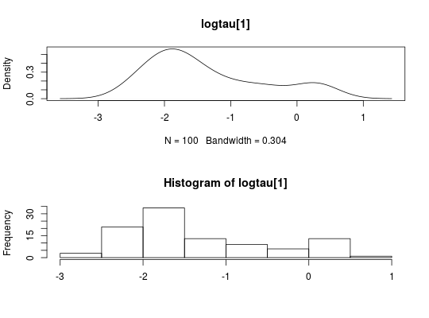

Objects for representing MCMC output.
A mcmcarray object is returned by the
biips_pimh_samples or biips_pmmh_samples
functions to represent MCMC output of a given variable.
A mcmcarray.list object is a named list of mcmcarray objects
for different monitored variables.
The methods apply identically to mcmcarray or mcmcarray.list
objects and return a named list with the same named members as the input
object.
mcmcarray(data = NA, dim = length(data), dimnames = NULL, iteration = length(dim), chain = NA, name = "mcmcarray", lower = NULL, upper = NULL) is.mcmcarray(object) is.mcmcarray.list(object) # S3 method for mcmcarray biips_summary(object, probs = c(), order = ifelse(mode, 0, 1), mode = all(object == as.integer(object)), ...) # S3 method for mcmcarray.list biips_summary(object, ...) # S3 method for mcmcarray biips_table(x, ...) # S3 method for mcmcarray biips_density(x, bw = "nrd0", ...) biips_hist(x, ...) # S3 method for mcmcarray biips_hist(x, main = NULL, xlab = NULL, ...) # S3 method for mcmcarray.list biips_table(x, ...) # S3 method for mcmcarray.list biips_density(x, bw = "nrd0", ...) # S3 method for mcmcarray.list biips_hist(x, main = NULL, xlab = NULL, ...) # S3 method for mcmcarray summary(object, ...) # S3 method for mcmcarray.list summary(object, ...) # S3 method for mcmcarray density(x, ...) # S3 method for mcmcarray.list density(x, ...) # S3 method for mcmcarray hist(x, ...) # S3 method for mcmcarray.list hist(x, ...)
Arguments
- data
- numerical vector
- dim
- vector of integers. dimension of the array
- dimnames
- character vector
- iteration
- integer. index of the dimension corresponding to iterations of the MCMC.
- chain
- integer. index of the dimension corresponding to chain of the MCMC.
- name
- string. variable name
- lower
- vector of integers. variable lower bound
- upper
- vector of integers. variable upper bound
- object, x
- a
mcmcarrayormcmcarray.listobject. - probs
- vector of reals. probability levels in ]0,1[ for quantiles.
(default =
c()) - order
- integer. Moment statistics of order below or equal to
orderare returned. (default = 0 if all the components are discrete variables and 1 otherwise) - mode
- logical. Activate computation of the mode, i.e. the most
frequent value among the particles. (default =
TRUEif all the components are discrete variables andFALSEotherwise) - ...
- additional arguments to be passed to the default methods. See
density,hist,table - bw
- either a real with the smoothing bandwidth to be used or a string
giving a rule to choose the bandwidth. See
bw.nrd. (default='nrd0') - main, xlab
- plotting parameters with useful defaults.
Value
The methods apply identically to mcmcarray or
mcmcarray.list objects and return a named list with the same named
members as the input object.
The mcmcarray function returns an object of class mcmcarray.
The function is.mcmcarray returns TRUE if the object is
of class mcmcarray.
The function is.mcmcarray.list returns TRUE if the
object is of class mcmcarray.list.
The method biips_summary returns univariate marginal
statistics. The output innermost members are objects of class
summary.mcmcarray, i.e. lists with members:
The method biips_table returns univariate marginal frequency
tables or probability mass estimates of discrete variables. The output
innermost members are objects of class table.mcmcarray.
The method biips_density returns univariate marginal kernel
density estimates. The output innermost members are objects of class
density.mcmcarray.
The method summary is an alias for biips_summary.
The method density is an alias for biips_density.
The method hist is an alias for biips_hist.
See also
Examples
modelfile <- system.file('extdata', 'hmm.bug', package = 'rbiips') stopifnot(nchar(modelfile) > 0) cat(readLines(modelfile), sep = '\n')#> var c_true[tmax], x_true[tmax], c[tmax], x[tmax], y[tmax] #> #> data #> { #> x_true[1] ~ dnorm(0, 1/5) #> y[1] ~ dnorm(x_true[1], exp(logtau_true)) #> for (t in 2:tmax) #> { #> c_true[t] ~ dcat(p) #> x_true[t] ~ dnorm(0.5*x_true[t-1]+25*x_true[t-1]/(1+x_true[t-1]^2)+8*cos(1.2*(t-1)), ifelse(c_true[t]==1, 1/10, 1/100)) #> y[t] ~ dnorm(x_true[t]/4, exp(logtau_true)) #> } #> } #> #> model #> { #> logtau ~ dunif(-3, 3) #> x[1] ~ dnorm(0, 1/5) #> y[1] ~ dnorm(x[1], exp(logtau)) #> for (t in 2:tmax) #> { #> c[t] ~ dcat(p) #> x[t] ~ dnorm(0.5*x[t-1]+25*x[t-1]/(1+x[t-1]^2)+8*cos(1.2*(t-1)), ifelse(c[t]==1, 1/10, 1/100)) #> y[t] ~ dnorm(x[t]/4, exp(logtau)) #> } #> }#' # PIMH algorithm data <- list(tmax = 10, p = c(.5, .5), logtau_true = log(1), logtau = log(1)) model <- biips_model(modelfile, data, sample_data = TRUE)#> * Parsing model in: /home/adrien-alea/Dropbox/workspace/rbiips/inst/extdata/hmm.bug #> * Compiling data graph #> Declaring variables #> Resolving undeclared variables #> Allocating nodes #> Graph size: 169 #> Sampling data #> Reading data back into data table #> * Compiling model graph #> Declaring variables #> Resolving undeclared variables #> Allocating nodes #> Graph size: 180#> * Initializing PIMH#> * Updating PIMH with 50 particles #> |--------------------------------------------------| 100% #> |**************************************************| 100 iterations in 0.44 s#> * Generating PIMH samples with 50 particles #> |--------------------------------------------------| 100% #> |**************************************************| 100 iterations in 0.45 s#' Manipulate `mcmcarray.list` object is.mcmcarray.list(out_pimh)#> [1] TRUEnames(out_pimh)#> [1] "log_marg_like" "x" "c[2:10]"out_pimh#> x mcmcarray: #> $mean #> [1] -2.534719 -7.700892 -13.303005 -14.857802 -5.441058 1.932022 #> [7] -3.192555 -7.883287 -11.893163 -14.809480 #> #> Marginalizing over: iteration(100) #> #> c[2:10] mcmcarray: #> $mode #> [1] 1 1 1 1 1 2 2 1 1 #> #> Marginalizing over: iteration(100) #>biips_summary(out_pimh)#> x mcmcarray: #> $mean #> [1] -2.534719 -7.700892 -13.303005 -14.857802 -5.441058 1.932022 #> [7] -3.192555 -7.883287 -11.893163 -14.809480 #> #> Marginalizing over: iteration(100) #> #> c[2:10] mcmcarray: #> $mode #> [1] 1 1 1 1 1 2 2 1 1 #> #> Marginalizing over: iteration(100) #>#' Manipulate `mcmcarray` object is.mcmcarray(out_pimh$x)#> [1] TRUEout_pimh$x#> mcmcarray: #> $mean #> [1] -2.534719 -7.700892 -13.303005 -14.857802 -5.441058 1.932022 #> [7] -3.192555 -7.883287 -11.893163 -14.809480 #> #> Marginalizing over: iteration(100)#> mcmcarray: #> $mean #> [1] -2.534719 -7.700892 -13.303005 -14.857802 -5.441058 1.932022 #> [7] -3.192555 -7.883287 -11.893163 -14.809480 #> #> $var #> [1] 0.7022717 7.5931535 8.9881352 7.5370171 8.5588339 16.2461484 #> [7] 13.0725697 10.3761809 14.1435275 10.5782347 #> #> $probs #> [1] 0.025 0.975 #> #> $quant #> $quant$`0.025` #> [1] -3.979947 -13.315782 -17.541175 -20.346094 -11.521998 -3.944119 #> [7] -8.674396 -13.683152 -17.308047 -21.622141 #> #> $quant$`0.975` #> [1] -0.5342039 -2.8535176 -7.1495458 -9.0554259 -0.2477334 9.5202394 #> [7] 5.7775448 0.2396458 -1.9139957 -9.7427954 #> #> #> Marginalizing over: iteration(100)par(mfrow = c(2, 2))biips_hist(out_pimh$x)is.mcmcarray(out_pimh[['c[2:10]']])#> [1] TRUEout_pimh[['c[2:10]']]#> mcmcarray: #> $mode #> [1] 1 1 1 1 1 2 2 1 1 #> #> Marginalizing over: iteration(100)#> mcmcarray: #> $mode #> [1] 1 1 1 1 1 2 2 1 1 #> #> Marginalizing over: iteration(100)plot(table_pimh_c)#' # PMMH algorithm data <- list(tmax = 10, p = c(.5, .5), logtau_true = log(1)) model <- biips_model(modelfile, data)#> * Parsing model in: /home/adrien-alea/Dropbox/workspace/rbiips/inst/extdata/hmm.bug #> * Compiling data graph #> Declaring variables #> Resolving undeclared variables #> Allocating nodes #> Graph size: 168 #> Sampling data #> Reading data back into data table #> * Compiling model graph #> Declaring variables #> Resolving undeclared variables #> Allocating nodes #> Graph size: 180n_part <- 50 obj_pmmh <- biips_pmmh_init(model, 'logtau', latent_names = c('x', 'c[2:10]'), inits = list(logtau = -2)) # Initialize#> * Initializing PMMH#> * Adapting PMMH with 50 particles #> |--------------------------------------------------| 100% #> |++++++++++++++++++++++++++++++++++++++++++++++++++| 100 iterations in 0.53 s#> * Generating 100 PMMH samples with 50 particles #> |--------------------------------------------------| 100% #> |**************************************************| 100 iterations in 0.50 s#' Manipulate `mcmcarray.list` object is.mcmcarray.list(out_pmmh)#> [1] TRUEnames(out_pmmh)#> [1] "log_marg_like_pen" "logtau" "x" #> [4] "c[2:10]"out_pmmh#> logtau mcmcarray: #> $mean #> [1] -1.36591 #> #> Marginalizing over: iteration(100) #> #> x mcmcarray: #> $mean #> [1] 2.1929692 15.8620635 2.5281769 -8.4506200 -0.2335445 15.3247336 #> [7] 12.6077789 5.3737540 -3.5057270 -11.5447417 #> #> Marginalizing over: iteration(100) #> #> c[2:10] mcmcarray: #> $mode #> [1] 2 1 1 2 2 1 1 2 2 #> #> Marginalizing over: iteration(100) #>biips_summary(out_pmmh)#> logtau mcmcarray: #> $mean #> [1] -1.36591 #> #> Marginalizing over: iteration(100) #> #> x mcmcarray: #> $mean #> [1] 2.1929692 15.8620635 2.5281769 -8.4506200 -0.2335445 15.3247336 #> [7] 12.6077789 5.3737540 -3.5057270 -11.5447417 #> #> Marginalizing over: iteration(100) #> #> c[2:10] mcmcarray: #> $mode #> [1] 2 1 1 2 2 1 1 2 2 #> #> Marginalizing over: iteration(100) #>#' Manipulate `mcmcarray` object is.mcmcarray(out_pmmh$logtau)#> [1] TRUEout_pmmh$logtau#> mcmcarray: #> $mean #> [1] -1.36591 #> #> Marginalizing over: iteration(100)summ_pmmh_lt <- biips_summary(out_pmmh$logtau, order = 2, probs = c(0.025, 0.975)) dens_pmmh_lt <- biips_density(out_pmmh$logtau) par(mfrow = c(2, 1))plot(dens_pmmh_lt) biips_hist(out_pmmh$logtau)is.mcmcarray(out_pmmh$x)#> [1] TRUEout_pmmh$x#> mcmcarray: #> $mean #> [1] 2.1929692 15.8620635 2.5281769 -8.4506200 -0.2335445 15.3247336 #> [7] 12.6077789 5.3737540 -3.5057270 -11.5447417 #> #> Marginalizing over: iteration(100)summ_pmmh_x <- biips_summary(out_pmmh$x, order = 2, probs = c(0.025, 0.975)) dens_pmmh_x <- biips_density(out_pmmh$x) par(mfrow = c(2, 2)) plot(dens_pmmh_x)par(mfrow = c(2, 2))biips_hist(out_pmmh$x)is.mcmcarray(out_pmmh[['c[2:10]']])#> [1] TRUEout_pmmh[['c[2:10]']]#> mcmcarray: #> $mode #> [1] 2 1 1 2 2 1 1 2 2 #> #> Marginalizing over: iteration(100)summ_pmmh_c <- biips_summary(out_pmmh[['c[2:10]']]) table_pmmh_c <- biips_table(out_pmmh[['c[2:10]']]) par(mfrow = c(2, 2))plot(table_pmmh_c)